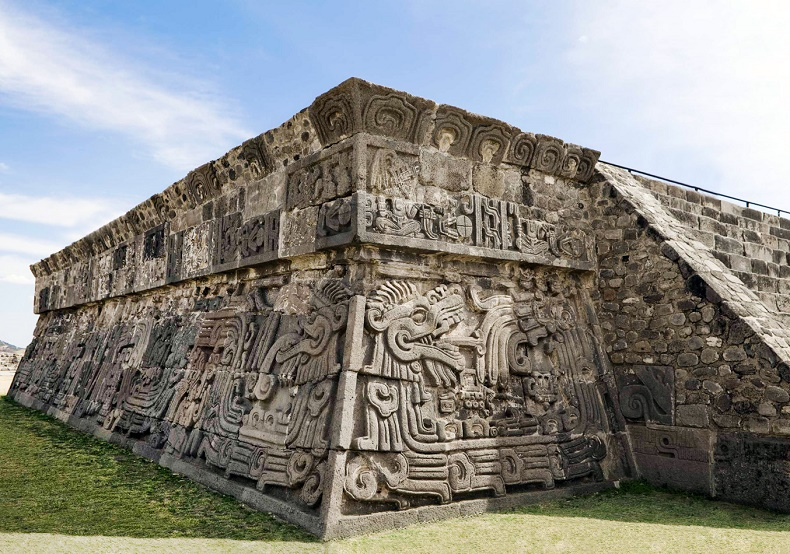

Introducción

El estado de Morelos es uno de los más pequeños de la Republica Mexicana, pero uno de los mayores en cuanto a sus bellezas y atractivos turísticos.
Famoso internacionalmente por las bondades de su clima, tiene una naturaleza generosa, portentosa historia, ricas tradiciones, gastronomía, artesanías y costumbres, hermosos monumentos históricos y artísticos, pueblos mágicos, una sólida infraestructura turística y una población cálida y hospitalaria.
Cuernavaca, Tepoztlán, Cuautla, Tlayacapan, Oaxtepec, la ruta de los conventos, pirámides y balnearios, volcanes y jardines, chinelos y cocina, forman parte de los atractivos que Morelos ofrece a sus visitantes.
Por su cercanía con la Ciudad de México y la excelencia de sus vías de comunicación, el estado de Morelos es siempre un destino turístico que pone sus maravillas al alcance de la mano.

Cuernavaca
Cuernavaca es una de las ciudades más antiguas de México fundada, unos cuantos años después de la consumación de la Conquista, por Hernán Cortés quien la eligió como lugar de descanso. Desde los tiempos prehispánicos, el valle de Cuaunáhuac fue uno de los favoritos del centro del país por la bondad de su clima y la fertilidad de sus tierras. A partir de la Conquista, Cuernavaca fue el principal núcleo urbano de la región y, ya en el México independiente, se convirtió en la capital del estado de Morelos.
Tepoztlán
Tepoztlán es un destino turístico místico, rodeado de magia, tradiciones y leyendas. La población, erigida como guardián al pie del cerro del Tepozteco, es una de las más pintorescas del centro de la República Mexicana. Sus calles, plazas, construcciones resguardan celosamente lenguas, costumbres, artesanías, alimentos que recuerdan su pasado colonial y prehispánico.
Tlayacapan
Tlayacapan, el lugar de los límites o la punta de la montaña, es una joya poco conocida en el estado de Morelos, a unos cuantos kilómetros de la Ciudad de México. Durante los tiempos prehispánicos tuvo una gran importancia por su estratégica ubicación geográfica. En la época colonial se convirtió en uno de los principales centros económicos y religiosos de toda la región y en el México independiente su importancia decreció hasta ahora que resurge gracias al turismo impulsado por su gran belleza natural y sus tesoros culturales.
Cuautla

Cuautla, cuyo nombre significa nido de águilas, es la segunda ciudad más importante del estado de Morelos y un tesoro natural y cultural del centro de México. Se le llama Cuautla la heroica e histórica, debido a los acontecimientos que en ella se han verificado y que han tenido una gran relevancia en la historia mexicana.
Oaxtepec
Tras una inversión en el deteriorado Centro Vacacional Oaxtepec, la empresa internacional Six Flags inauguró en mayo de 2017 el espléndido Hurricane Harbor Oaxtepec, un parque acuático con infinidad de diversiones para grandes y chicos y con todos los servicios necesarios para pasar un día o un fin de semana a todo dar.
Toboganes y atracciones como Anaconda, Shark Attack, Tornado, Typhoon, Adventure River, Hurricane Bay y Coconut Bay, hacen las delicias de grandes y chicos con experiencias excitantes o de pleno relax.
Oaxtepec está también repleto de magia colonial a través de edificaciones de gran importancia histórica que se han conservado magníficamente, como el Exconvento de Santo Domingo de Guzmán y su museo, y el Hospital de la Santa Cruz.
En ex haciendas como Apanquetzalco, Atlihuayá y Oacalco, podrás rememorar el pasado esplendor rural de la región y en sus sitios arqueológicos apreciarás el legado de los pueblos prehispánicos del actual Morelos.
Si vas a Oaxtepec pensando en un spa, no dudes en instalarte en Dorados Conventions & Resort.
Centro histórico de Cuernavaca

La capital de Morelos alberga edificaciones de notable belleza y relevancia histórica, como la Catedral, el Palacio de Cortés, el Palacio de Gobierno, el Chapitel y el Hotel Casino La Selva.
El Palacio de Cortés fue la casa de descanso del célebre conquistador y es una imponente construcción levantada a imagen del Alcázar de Colón, en la isla La Española.
El Palacio de Gobierno es un edificio de estilo barroco virreinal y el Chapitel es un conjunto religioso formado por una iglesia y una capilla abierta.
El antiguo Hotel Casino La Selva fue demolido, pero se conservaron los magníficos murales pintados por Gerardo Murillo, David Alfaro Siqueiros y Jorge González Camarena.
Tequesquitengo
La simpática Teques es una población del municipio morelense de Jojutla, en el sector suroccidental del estado, que se distingue por su lago, que es uno de los santuarios para los deportes acuáticos en México.
El Lago de Tequesquitengo tiene una superficie de 8 km2 y un perímetro de 16 km, y el clima cálido sin bruscas variaciones de temperatura lo ha convertido en un destino de todo el año para los amantes del esquí acuático, el wakesurf y el buceo.
Igualmente, la gran cantidad de jóvenes que va a Teques ha potenciado el desarrollo de otros novedosos entretenimientos, como el paracaidismo de puentes, el sky dive, el flyboard y el rafting por el Río Amacuzac.
Si no estás interesado en tanta adrenalina, en Teques también puedes hacer excursiones y observar relajadamente la biodiversidad.
Museos de Cuernavaca
Papalote Cuernavaca es un museo que encanta a los niños por la forma divertida con la que entran en contacto con los temas de la ciencia y el arte y con los procesos que los interrelacionan.
El museo se encuentra en la Avenida Vicente Guerrero y funciona en un edificio que fue diseñado por el arquitecto Alejandro Bernardi.
Otra interesante museo cuernavaquense es el Robert Brady, que opera en la que fuera la casa de residencia del artista y coleccionista estadounidense de ese nombre.
La colección de más de 1.300 piezas incluye pinturas, imágenes, mobiliario y objetos antiguos de varias culturas, reunidas por Brady en sus frecuentes viajes por el mundo.
El Museo Morelense de Arte Popular reúne las mejores creaciones de los artesanos del estado, la mayoría premiadas en los concursos del sector.
Jardines de Cuernavaca
El Jardín Borda, con sus impresionantes áreas verdes y su mansión señorial, fue levantado en el siglo XVIII como sitio de descanso por el empresario minero José de la Borda, el hombre más rico de su tiempo en Nueva España.
En este jardín que también fue lugar de veraneo del emperador Maximiliano, crecieron los primeros mangos sembrados en territorio mexicano.
El Parque Ecológico Chapultepec está sombreado por árboles de hasta 3 siglos de edad y cuenta con planetario, herpetario y espacios para juegos infantiles.
El Jardín Juárez es una pequeña plaza de 1866 situada frente al zócalo de Cuernavaca y su atractivo kiosco fue diseñado por el ingeniero francés Gustave Eiffel.
Zoofari de Cuernavaca
Es un zoológico situado en el km 55 de la carretera libre Cuernavaca-Taxco, que cuenta con secciones para conocer a pie y en auto.
El parque zoológico tiene un lago en el que viven varias especies y por encima del mismo se encuentra una tirolesa de 200 metros de longitud.
Zoofari propicia una convivencia cercana pero segura con los animales y durante los fines de semana y temporadas vacacionales ofrece paseos en dromedarios, llamas y ponis.
El Sendero del Jaguar es un bello circuito para un recorrido ecológico por puentes colgantes y tibetanos.
El zoo está abierto los 365 días del año, entre 9 AM y 5 PM, cerrando a las 6:30 PM, y la entrada general es de $185, con precio preferencial de $165 para niños y adultos mayores.
Xochicalco

LEste yacimiento arqueológico morelense localizado a 38 km de Cuernavaca fue declarado Patrimonio de la Humanidad en 1999.
Se cree que el surgimiento del asentamiento estuvo vinculado con el abandono de Teotihuacán, viviendo su época de esplendor durante el periodo Epiclásico, entre los siglos VII y X.
Por la calidad de sus relieves esculpidos, debió acoger a varios notables artistas. El principal edificio del conjunto es la Pirámide de la Serpiente Emplumada, que pone de manifiesto en sus fachadas el talento artístico de sus constructores.
Xochicalco también era un observatorio astronómico, conservándose una estructura de casi 9 metros con una boca de tiro hexagonal e inclinada, que se utilizaba para el estudio del movimiento de los rayos solares.
El yacimiento dispone de un museo de sitio, catalogado como el primero del mundo de carácter ecológico, por su construcción y por sus sistemas naturales de iluminación, ventilación y captación del agua de lluvia.
Parque Nacional Iztaccíhuatl-Popocatépetl
Este bello espacio formado por amplios parajes, zonas boscosas y conos volcánicos, abarcando territorios de los estados de México, Puebla y Morelos, fue una de las primeras áreas protegidas de la república mexicana.
Fue decretado en 1935 por el presidente Lázaro Cárdenas y en sus casi 40 mil mil hectáreas se encuentran el Popo y el Itza, volcanes activos y las dos cumbres más elevadas del país después del Pico de Orizaba.
Los entusiastas de los paisajes naturales van al parque nacional a respirar aire puro, observar la biodiversidad, acampar, hacer excursiones y practicar ciclismo montañero, entre otros entretenimientos al aire libre.
Los alpinistas ascienden por sus faldas nevadas, desde las que se tienen maravillosas vistas de Orizaba, el Nevado de Toluca, el Volcán La Malinche y los valles de Puebla y de Tlaxcala.
Parque Nacional Lagunas de Zempoala
Es un espacio protegido de casi 4.800 hectáreas, situado en el municipio morelense de Huitzilac y caracterizado por varios lagos que albergan una rica biodiversidad y por hermosos espacios verdes.
Las principales lagunas son Quila, que es la mayor, Zempoala, Tonatihua, Compila, Prieta, Seca y Hueyapan. El parque es muy frecuentado por visitantes de Ciudad de México, Cuernavaca y otras ciudades y pueblos cercanos, que van a hacer camping, excursiones, senderismo y ciclismo de montaña, y a observar la vida natural.
La nutrida variedad de algas en las lagunas propicia una intensa vida acuática, con presencia de especies como la carpa de Israel y la trucha arcoíris.
Entre la fauna terrestre más exclusiva del lugar se encuentran conejitos de los volcanes y venados de cola blanca, ambas especies en riesgo de extinción.
Sitio arqueológico de Coatetelco

PEs un yacimiento que se encuentra cerca de Xochicalco, en el municipio morelense de Miacatlán y que vivió su mayor auge entre los siglos V y II a.d.C.
Fue construido durante el periodo preclásico tardío y se han rescatado un templo piramidal, una cancha para el juego de pelota y otras estructuras edificadas en torno a una plaza central.
Debajo de la escalinata principal de la cancha de juego de pelota fueron halladas tumbas con ofrendas de cerámica, obsidiana, jade y piezas de cobre-bronce.
La construcción más elevada del sitio es el Templo de Cuauhtlitzin, en el que fue encontrada una figura femenina tallada en piedra, llamada Cuauhtlitzin, con la cabeza notablemente esculpida.